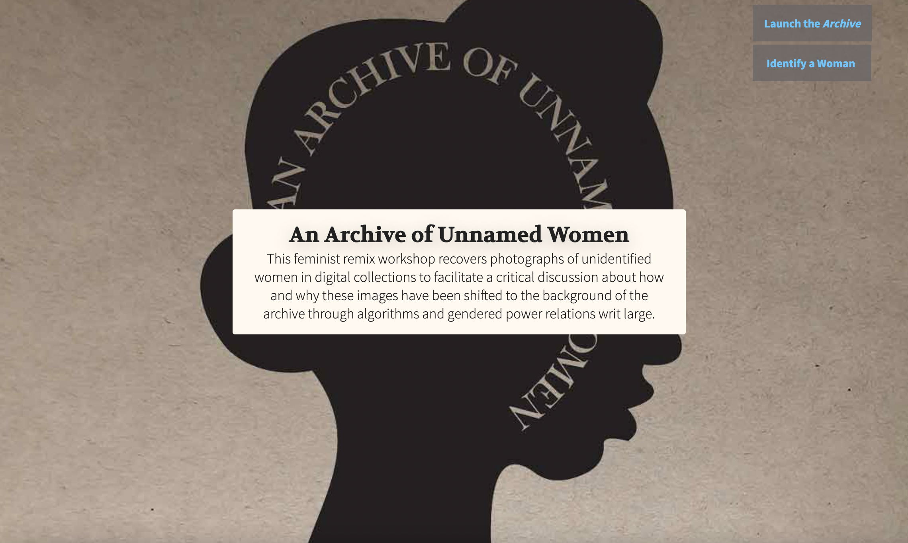

Make Stuff
Here are some things I've made while on sabbatical
- flutter bound booklet of Jackie's Instagram posts
- refurbished leather chair painted in Heirloom Tradition Paint's "all-in-one" bone white
- plant hospital on front porch where houseplants can get more light
Instructions for viewing sourcecode in Chrome
Note: Chrome is my default browser.
- Navigate to the webpage you want to inspect
- Click on "view" in the header menu
- Choose Developer/Inspect elements
3 Things You Can Do with Dev Tools
- see the html and css code underlying any site
- copy and paste relevant code into your own project
- mess with the code to see how it changes the existing site
- edit your own project so that you can see how your code changes affect the site as you go
I need a new metaphor for dev tools, since I think of the Dashboard in my WordPress sites as a car dashboard, and the C-Panel as looking under the hood. The c-panel allows you to see inside all the files that make up your site. Dev Tools allows you to see this and more. So for me Dev Tools is kind of like an x-ray or better yet, an ultrasound, because you can not only see under the surface, but also manipulate stuff.

I don't know if I have a favorite animal, but I have great admiration for elephants, for their intelligence, memory, and loyal relationships.